Atril interactivo de la subsala Todo se transforma: la letra de la canción de Jorge Drexler con cinco versos que explican una transformación científica al pulsarlos.
La ciencia que canta Drexler
Abre la canción
La ciencia que canta Drexler

Jorge Drexler · Eco (2004) · pulsa un verso resaltado
Tu boca roja en la mía, la copa que gira en mi mano,y mientras el vino caía, supe que de algún lejano rincónde otra galaxia, el amor que me darías,transformado, volvería un día a darte las gracias.Cada uno da lo que recibey luego recibe lo que da,nada es más simple, no hay otra norma,nada se pierde, todo se transforma.donde hicieron mi zapato sobre el que caería el vino.Zapato que en unas horas buscaré bajo tu camacon las luces de la aurora junto a tus sandalias planas,que compraste aquella vez, en Salvador de Bahía,donde a otro diste el amor que hoy yo te devolvería.Cada uno da lo que recibey luego recibe lo que da,Todo se transforma.Todo se transforma.Supe queun día a darte las gracias.Porque cada uno da lo que recibey luego recibe lo que da,nada es más simple, no hay otra norma,nada se pierde, todo se transforma.Nada se pierde, todo se transforma.Nada se pierde, todo se transforma.Todo se transforma.Todo se transforma.Todo se transforma.Todo se transforma.
Pulsa un verso resaltado para descubrir la ciencia